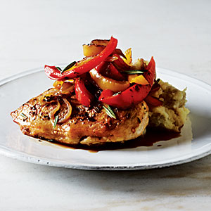

| Roast Chicken with Balsamic Bell Peppers | |
|---|---|
|  |
1. Preheat oven to 450°.
2. Heat a large skillet over medium-high heat. Combine 1/2 teaspoon salt, fennel seeds, 1/4 teaspoon black pepper, garlic powder, and oregano. Brush chicken with 1 1/2 teaspoons oil; sprinkle spice rub over chicken. Add 1 1/2 teaspoons oil to pan. Add chicken; cook 3 minutes or until browned. Turn chicken over; cook 1 minute. Arrange chicken in an 11 x 7–inch baking dish coated with cooking spray. Bake at 450° for 10 minutes or until done. 3. Heat remaining olive oil over medium-high heat. Add bell peppers, shallots, and rosemary; sauté 3 minutes. Stir in broth, scraping pan to loosen browned bits. Reduce heat; simmer 5 minutes. Increase heat to medium-high. Stir in vinegar, 1/4 teaspoon salt, and 1/4 teaspoon pepper; cook 3 minutes, stirring frequently. Serve bell pepper mixture over chicken. |